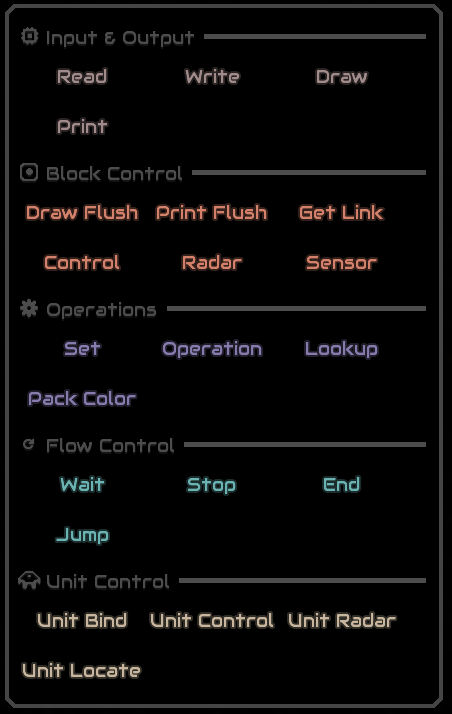

Mlog Documentation
By Yruei
Foreword
This documentation was created entirely by me, so there may be inaccuracies or omissions. As English is not my first language, I apologize for any spelling or grammar errors. If you have any corrections, additions, or suggestions, please feel free to contact me to discuss them.
Or if you just want to ask questions, I’ll be happy to help
you can DM me on
Discord (Yruei)
Reddit (u/Far_Kale558)
Incomplete list or information, if you want to help expanding it:
Incomplete
Incomplete
and every ‘(WIP)’ labeled title
Introduction
What is Mindustry logic?
Mindustry Logic (mlog) is a scripting language added in v6 for the purpose of introducing more advanced automation and strategy into the game It is heavily inspired by Assembly languages, therefore the language is a low level language making it harder to understand (low level being low to machine language (Assembly, C, etc) and far from human language, high level language example are (python, javaScript, C#, etc) if you have previous programming experience it's very easy to learn but people who are entirely new to programming might find this a little confusing.
Fun fact, it is turing complete (meaning you can literally do anything a real computer can, although the practicality is questionable),
it is often used for more advanced automation (telling units what to do, disabling/enabling blocks, and more),
For more advanced people, they like to mess around just for fun making stuff that are not actually useful to campaign like games, emulators, renderings, etc.
mlog is not necessary for the completion of campaign , it is very optional, often the time you spent coding will be more than if you just do it manually..
Glossary
Data types
Integers
Integers are whole numbers, meaning no decimal, 1,2,3, are integers, 1.001, are not.
Float
Opposite of integers, decimal numbers, 1.001, are float.
Boolean
A data type that can have 1 of 2 states, true or false, 0 or 1.
Strings
a sequence of characters, different from variables, in mlog strings are enclosed by “ (quotation mark) (“Hello, world” is a string).
Block or Unit Reference
every block and unit has a unique reference, so every block and unit can be differentiated from each other , internally they look like "message#98257" or “poly#49178“, these are not viewable without modifying the game. in game these references are stored in a variable like Building Variable, or @unit they can also be written to a normal variable
Basic concept
Processors
There are 3 types of Logic Processors, Micro processor, Logic processor, and Hyper processor, each have different speeds and range (Information can be found in the game’s info menu).
Processor’s UI
when opening a processor by clicking the pencil icon:
you will be prompted to this screen:
the “Add” button () opens a menu to add an instruction:
Section 3
Content for section 3.
Section 3
Content for section 3.
Section 3
Content for section 3.
Section 3
Content for section 3.